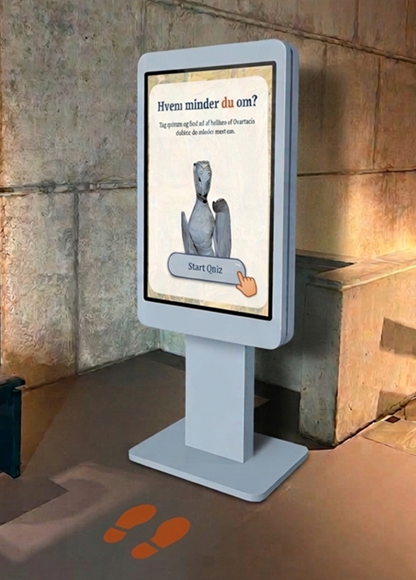
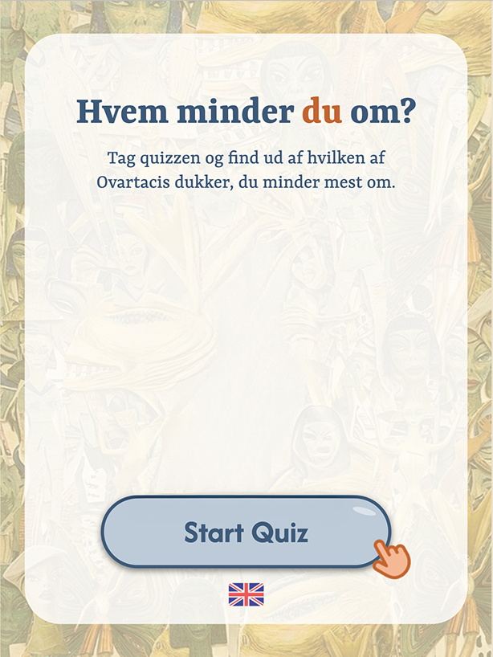
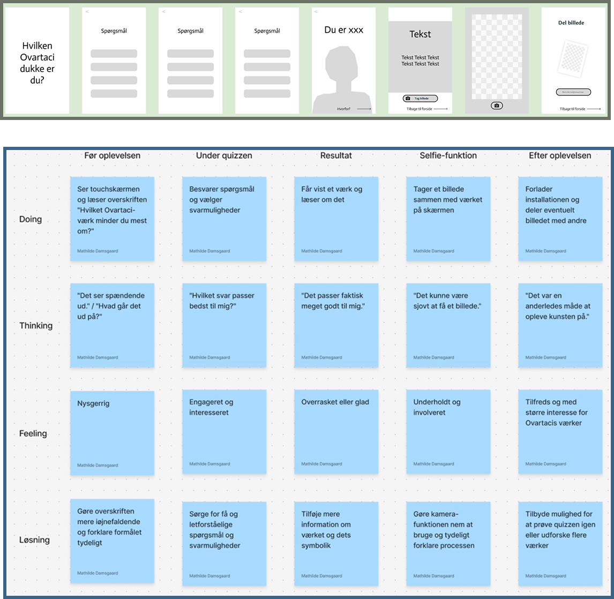
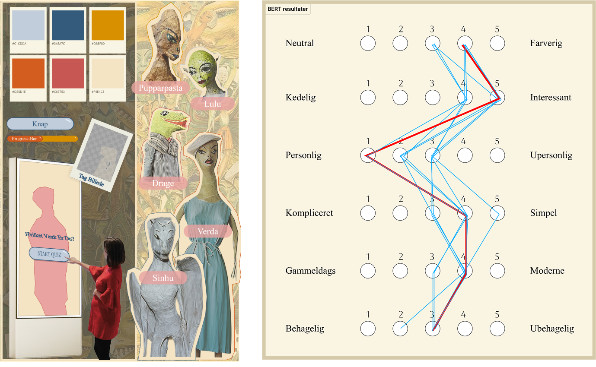
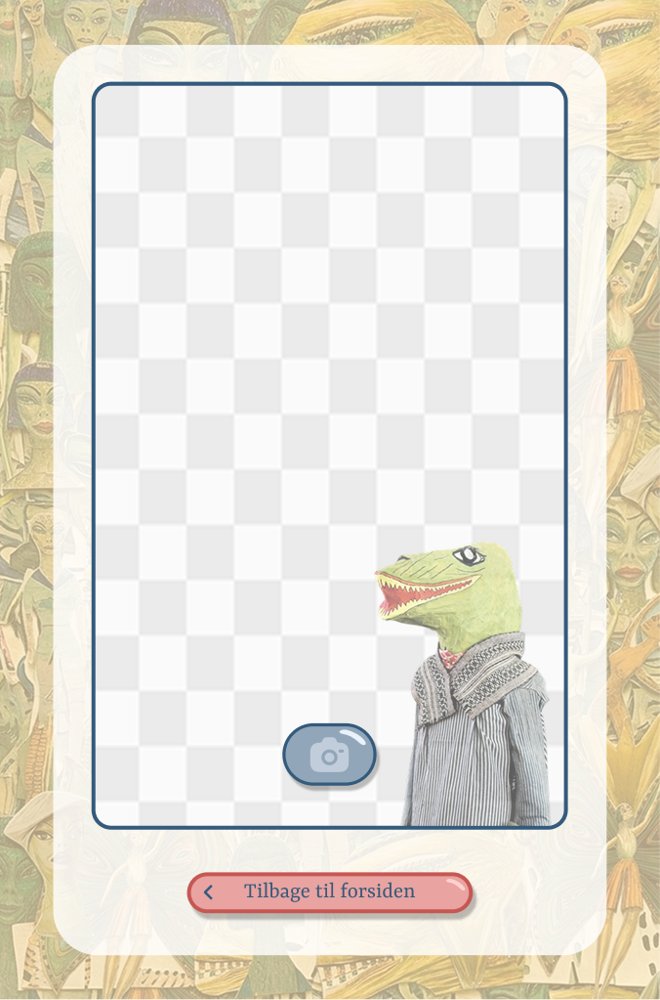
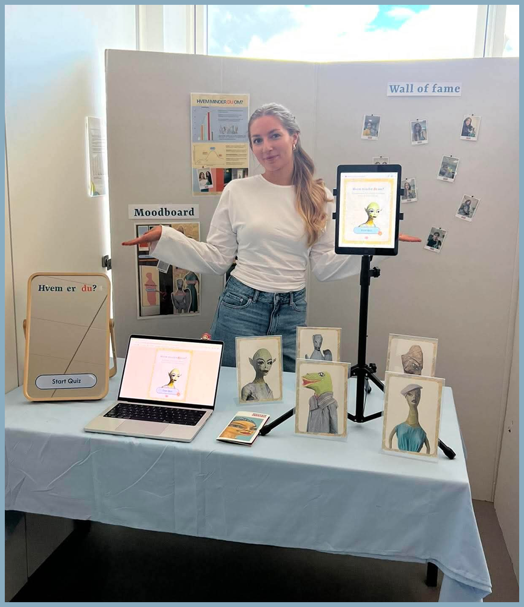

Museum Ovartaci - Immersive experience eksamensprojekt



01
Projektet
Hvordan kan man gøre kunst og museumsoplevelser mere interaktive og interessante for en yngre målgruppe?
Det var udgangspunktet for vores projekt for Museum Ovartaci, hvor vi udviklede idéen til en interaktiv quiz, som besøgende kan bruge direkte på museet.
Quizzen tager udgangspunkt i spørgsmålet "Hvilket Ovartaci-værk minder du mest om?". Gennem en række spørgsmål bliver brugeren matchet med et af Ovartacis værker. Efterfølgende kan brugeren læse mere om værket og tage en selfie med en digital maske inspireret af værket.
02
Idé og koncept
Idéen var at gøre mødet med Ovartacis kunst mere personligt og interaktivt. I stedet for kun at formidle information om værkerne ville vi lade brugeren blive en aktiv del af oplevelsen. Derfor udviklede vi en quiz, hvor brugeren gennem en række spørgsmål bliver matchet med den Ovartaci-dukke, der minder mest om dem.

03
Research
Vi startede med at undersøge Museum Ovartaci, deres besøgende og særligt den yngre målgruppe. Gennem desk research, interviews og observationer undersøgte vi, hvordan unge oplever museer, og hvad der kan gøre museumsbesøget mere interaktivt og engagerende. Vi undersøgte samtidig Ovartacis værker og deres historier for at finde sammenhænge mellem værkerne og forskellige personligheder.

04
UX og brugerflow
Vi arbejdede med UX for at skabe et enkelt og intuitivt flow gennem quizzen. User flows og wireframes hjalp os med at strukturere oplevelsen fra første spørgsmål til det endelige resultat. Vi arbejdede samtidig med experience mapping for at forstå brugerens handlinger, følelser og potentielle pain points gennem oplevelsen.

05
Visuelt design
Det visuelle udtryk skulle være moderne og appellerende for den yngre målgruppe, samtidig med at det skulle passe til Museum Ovartacis kunstunivers. Vi arbejdede med moodboards, farver, typografi og UI-elementer og testede det visuelle udtryk gennem en BERT-test. Feedbacken blev brugt til at videreudvikle designet.

06
Interaktion og udvikling
Efter designfasen omsatte vi løsningen til en interaktiv prototype i HTML, CSS og JavaScript. Vi arbejdede blandt andet med quiz-logikken, localStorage og kamera-funktionen, som gør det muligt for brugeren at tage en selfie med en digital maske inspireret af deres resultat. Animationer og GIF'er blev desuden udviklet i Adobe Photoshop for at skabe mere liv og understøtte den immersive oplevelse.
07
Min del af projektet
Jeg havde bl.a. ansvar for at dokumentere og formidle vores designproces - fra idéudvikling og skitser til prototyper, brugertests og det endelige design. Jeg arbejdede med at samle vores iterationer og testresultater samt analysere den feedback, vi fik undervejs. Derudover var jeg med til at visualisere og beskrive den endelige brugeroplevelse, herunder hvordan gæsten skulle bevæge sig gennem rummet og interagere med den digitale løsning.
Se hele designprocessen her
08
Resultat
Resultatet blev en interaktiv prototype af en museumsinstallation, der kombinerer kunstformidling, quiz, gamification og sociale medier.
Løsningen giver brugeren en mere personlig og legende vej ind i Museum Ovartacis kunstunivers og er samtidig designet med fokus på at gøre museumsoplevelsen mere relevant og engagerende for en yngre målgruppe.
Se prototypen her
09
Expo fremvisning
Som afslutning på semesteret præsenterede vi vores Ovartaci-projekt på skolens fælles EXPO. Her havde vi vores egen stand, hvor besøgende kunne afprøve vores interaktive quiz og høre om vores idé, research og designproces. Vi udarbejdede også en A3-plakat, der præsenterede projektets vigtigste brugerindsigter og formålet med løsningen.
EXPO’en gav os mulighed for at få projektet ud af klasselokalet og præsentere vores arbejde for både medstuderende, undervisere og gæster fra branchen.